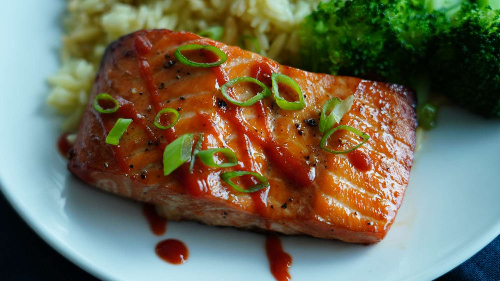

Air-Fried Bang Bang Salmon

Description
Easy, fast, and tasty! These tender, air-fried salmon fillets are full of subtly sweet and spicy flavor. Serve with rice and a green vegetable for the perfect healthy dinner.
Ingredients
thinly sliced green onion
Steps
Preheat an air fryer to 400 degrees F (200 degrees C).
Prepare sauce by whisking mayonnaise, chili sauce, and Sriracha together in a small bowl until well blended.
Spread 1 tablespoon sauce over the top of each salmon fillet. Reserve remaining sauce for serving.
Lightly coat the air fryer basket with cooking spray. Place fillets in the air fryer basket with the sauce facing up.
Air-fry until salmon flakes easily with a fork, about 10 minutes.
To serve, drizzle salmon with extra sauce and sprinkle green onion over top.